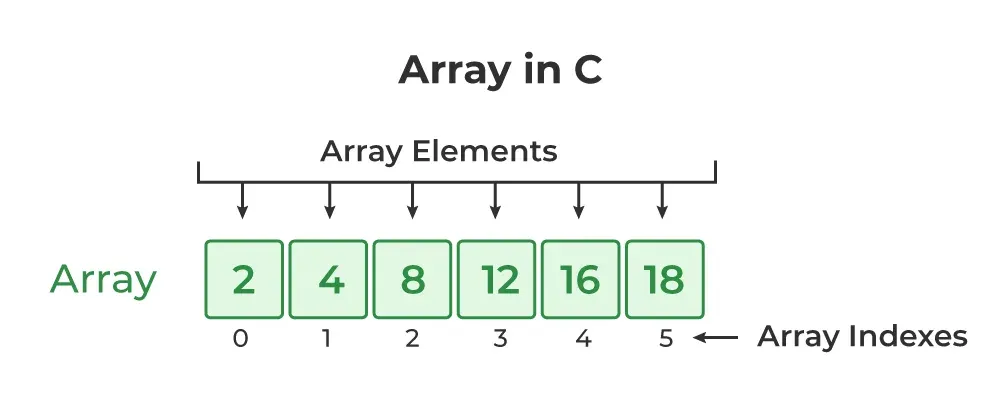

Introduction To C++
C++ is a powerful, general-purpose programming language developed by Bjarne Stroustrup at Bell Labs in the early 1980s. It originated as an extension of the C programming language, initially called "C with Classes," and evolved to incorporate object-oriented programming (OOP) principles.
Feature of C++
- Object-Oriented Programming (OOP): C++ fully supports OOP principles like classes, objects, inheritance, polymorphism, encapsulation, and abstraction, enabling modular and reusable code design.
- Performance: It offers high performance due to its close-to-hardware capabilities, including manual memory management and low-level control, making it suitable for resource-intensive applications.
- Memory Management: C++ provides features like pointers and the new and delete operators for explicit, dynamic memory allocation and deallocation, giving developers fine-grained control over memory usage.
- Standard Template Library (STL): The STL offers a rich collection of pre-built data structures (e.g., vectors, lists, maps) and algorithms (e.g., sorting, searching), significantly boosting development efficiency and code quality.
- Multi-Paradigm Programming: C++ supports multiple programming paradigms, including procedural, object-oriented, and generic programming (through templates), allowing developers to choose the most appropriate style for different tasks.
- Compiler-Based: C++ is a compiled language, meaning the entire code is translated into machine-executable code before execution, contributing to its speed.
Basic Syntax
#include <iostream>
using namespace std;
int main() {
cout << "Hello World!";
return 0;
}
- Line 1:
#include <iostream>is a header file library that lets us work with input and output objects, such as cout (used in line 5). Header files add functionality to C++ programs. - Line 2:
using namespace stdmeans that we can use names for objects and variables from the standard library. - Line 3: A blank line. C++ ignores white space. But we use it to make the code more readable.
- Line 4: Another thing that always appear in a C++ program is
int main(). This is called a function. Any code inside its curly brackets{}will be executed. - Line 5:
cout(pronounced "see-out") is an object used together with the insertion operator (<<) to output/print text. In our example, it will output "Hello World!".
Applications of C++
- Operating Systems: Major operating systems like Windows, macOS, and Linux utilize C++ in their core components for efficiency and direct hardware interaction.
- Game Development: C++ is extensively used in game engines (e.g., Unreal Engine, Unity) and for developing high-performance games due to its speed and control over resources.
- Web Browsers: The rendering engines of popular web browsers such as Chrome, Firefox, and Safari are built with C++ to ensure fast and efficient page loading.
- Embedded Systems: Due to its lightweight nature and control over hardware, C++ is a preferred language for programming embedded systems, including microcontrollers, IoT devices, and automotive systems.
- Enterprise Software: Many large-scale enterprise applications and backend systems utilize C++ for its robustness and performance.
Online C++ Compiler
Introduction to Arrays
Arrays in C++ are fundamental data structures used to store a collection of elements of the same data type in contiguous memory locations. They provide a way to manage and organize multiple related values under a single variable name, accessed via an index.
 |
 |
|---|
Characteristics of Arrays
- Homogeneous elements: All elements in an array must be of the same data type, such as all integers or all strings.
- Fixed size: The number of elements in an array is set when it is created and cannot be changed during program execution.
- Contiguous memory allocation: Elements are stored in adjacent memory locations, which enables efficient access.
Type of Arrays
- One-dimensional array: A linear array where elements are stored sequentially and accessed using a single subscript or index.
- Multi-dimensional array: An array of arrays, which can have multiple dimensions, such as a 2D array (table) or a 3D array.
- Dynamic array: An array whose size can change during the execution of a program, as opposed to a fixed-size array whose size is determined at compile time.